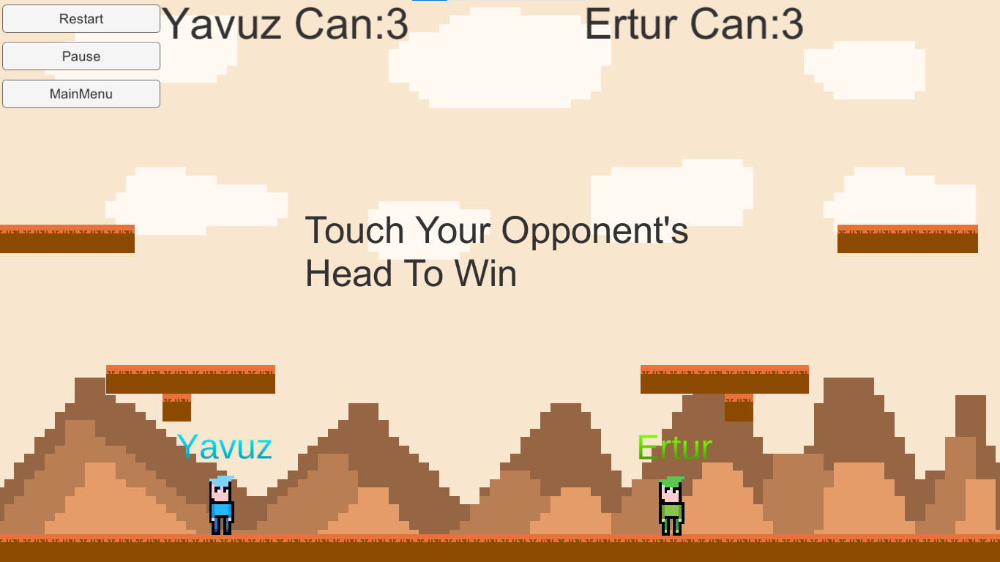
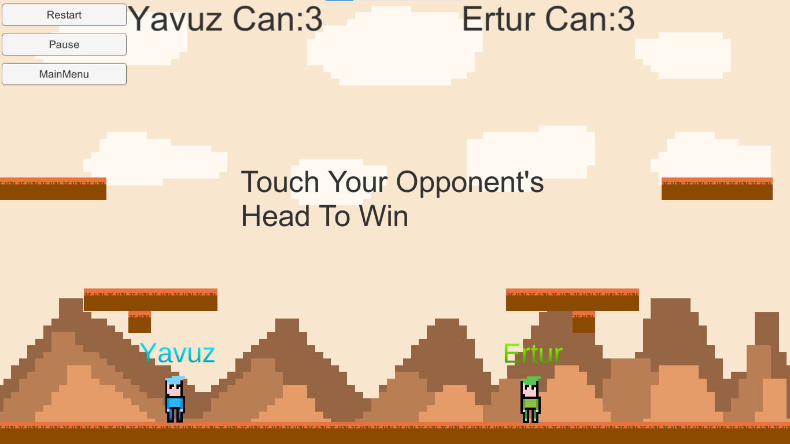

2Mode2Player
Zamanında ilk oyunumu yaptıktan sonra "Acaba multiplayer olur mu" sorusuyla başlayıp zorluğunu idrak edince "Bari aynı klavyeden multiplayer olsun"dediğim ve Fen Bilimleri öğretmenim ve oğlunun oynamasına bile vesile olduğum ateş ve su tarzı yanınızdakiyle oynayıp eğlenebileceğiniz bir oyun.
Oyunun 2 farklı modundan birini seçip arkadaşınızla kapışabilirsiniz.
1.Kafaya Bastırma Modu
Bu modda 2 oyuncunun da 3 canı vardır ve kafasına basılan oyuncunun canı gider.
Sona kalan oyuncu galip olur.
2.Ateş Etme Modu
Bu modda 2 oyuncunun da 3 canı vardır ve mermi yiyen oyuncunun canı gider.
Sona kalan oyuncu galip olur.

Oyunu yüklemek için linke tıklayıp "Download" butonuna basın

 
